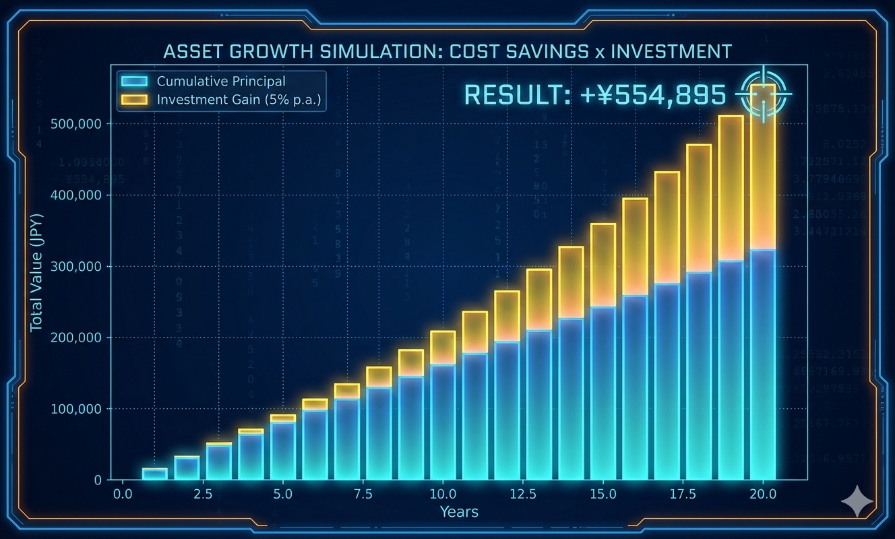

おむつ用ゴミ箱 スペック比較
防臭の仕組み、ごみ捨ての楽さ、月間コスト。3つの重要指標で徹底比較。

[Technical Review] 物質特性と構造工学が導き出した「防臭」の最終回答
settings 1. 構造解析：回転ドラムによる物理的遮断
ピジョン「ステール」が採用している回転ドラム機構は、流体力学的・物理学的な視点から見て極めて合理的である。
一般的なゴミ箱は、蓋を開閉する際に内部に滞留した高濃度のニオイ分子（硫化水素やアンモニア等）が一気に外気と置換される「換気現象」が発生する。
一方、本機は回転ドラムによる密閉空間を介してゴミを投入するため、常に内部の空気と外気を遮断し続けている。
これにより、開閉時のニオイ漏れを物理的限界まで抑え込んでいる。
science 2. 物質特性：ポリプロピレン（PP）の分子レベル・バリア
多くのユーザーが見落としているのが「袋の透過性」である。安価なポリ袋（ポリエチレン/PE）は、ニオイの分子を容易に透過させてしまう。
ここで「パン袋」に使用される ポリプロピレン(PP)
を採用することが工学的最適解となる。
PPはPEと比較して気体透過性が低く、水分やニオイ成分の分子遮断能力に優れている。

savings 3. 経済的合理性：固定費削減と資産運用への転換
カートリッジ式の年間維持費は約 18,000円 に達するが、本システム（ステール ✕ パン袋）は約 1,800円 で運用可能である。
年間 16,200円 の固定費削減は、一見小さな額に見えるが、この浮いた資金を期待利回り 5.0% で運用し、育児期間の20年間継続した場合、元利合計で 約 550,000円 の資産を構築できる計算となる。
育児グッズの選定は、単なる消耗品の購入ではなく、家庭のキャッシュフローを最適化するための「投資判断」そのものである。
※注釈：青色が累計積立額（元本）、黄色が年利 5% による運用益。20年後には大きな資産差（約 55万円）として結実。
[Required Components: The Ultimate Odor-Free Kit]
※楽天で最安値をチェック